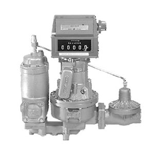

LPM-200 Расходомер LIQUA-TECH для СУГ с регистром без принтера, производительность до 80-380 л/мин (США)
LIQUA-TECH
Раздел: Счётчики и расходомеры СУГ · АГЗС
Цена и наличие — по запросу. Поставляем оригинал и аналоги. Доставка по России.
Модификации и размеры (2)
- LPM-200 Расходомер LIQUA-TECH для СУГ с регистром без принтера, производительность до 80-380 л/мин (США)
- LPM-150 Расходомер LIQUA-TECH для СУГ с регистром без принтера, производительность до 45-227 л/мин (США)
Подберём нужный вариант — уточните при запросе.
Описание
LPM-200 Расходомер LIQUA-TECH для СУГ с регистром без принтера, производительность до 80-380 л/мин (США) производства LIQUA-TECH — позиция из раздела «Счётчики и расходомеры СУГ» для АГЗС. Компания SYNDICAT поставляет оборудование и комплектующие для автозаправочных и газозаправочных станций по всей России. Цена и наличие «LPM-200 Расходомер LIQUA-TECH для СУГ с регистром без принтера, производительность до 80-380 л/мин (США)» — по запросу: оставьте заявку или позвоните, подберём оригинал или аналог и рассчитаем доставку.